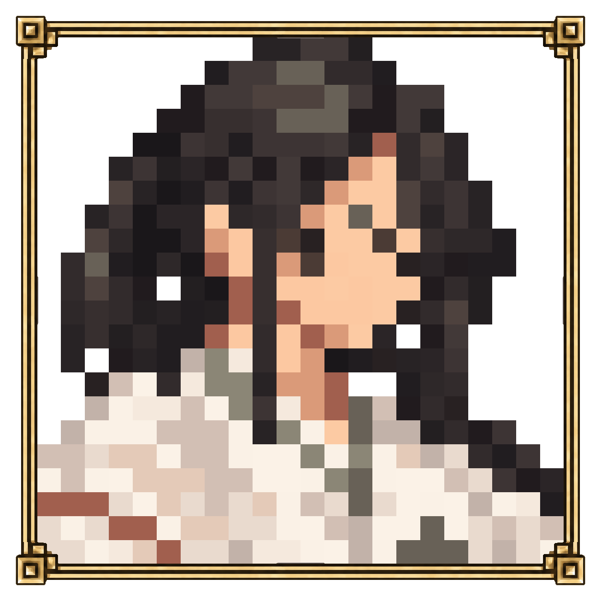

<!doctype html><html lang="ko"><meta charset="utf-8"><meta name="viewport" content="width=device-width,initial-scale=1"><title>Stillness · 미나미 눈매</title><style>@font-face{font-family:GameText;src:url('../../fonts/Pretendard-Regular.subset.woff2')}*{box-sizing:border-box}body{margin:0;background:#22201c;color:#dfd5c3;font-family:GameText,system-ui,sans-serif}main{max-width:900px;margin:auto;padding:24px 18px}h1{font-size:23px;font-weight:400;margin:0 0 12px}p{font-size:14px;color:#b9ae9b;line-height:1.7}.pair{display:grid;grid-template-columns:1fr 1fr;gap:20px;margin:22px 0}figure{margin:0}img{display:block;width:100%;height:auto}figcaption{text-align:center;font-size:15px;margin-top:12px}a{color:#d7bc80}footer{font-size:13px;margin-top:28px}@media(max-width:600px){main{padding:18px 10px}.pair{gap:10px}h1{font-size:20px}figcaption{font-size:13px}}</style><main><h1>미나미 · 눈 위치 조정</h1><p>B안의 화면 왼쪽 눈을 모양 그대로 오른쪽으로 도트 한 칸 옮겼습니다.</p><div class="pair"><figure><a href="minami/low-eye-option2-before-shift.png"></a><figcaption>B · 이동 전</figcaption></figure><figure><a href="minami/low-eye-option2.png?v=f18d467c69a9"></a><figcaption>B · 오른쪽 한 칸</figcaption></figure></div><p>눈의 모양과 높이를 유지했습니다. 초상을 누르면 크게 볼 수 있습니다.</p><footer><a href="./">전체 프로필</a></footer></main></html>